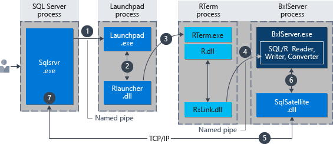
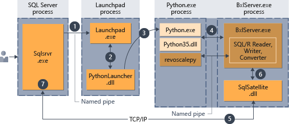
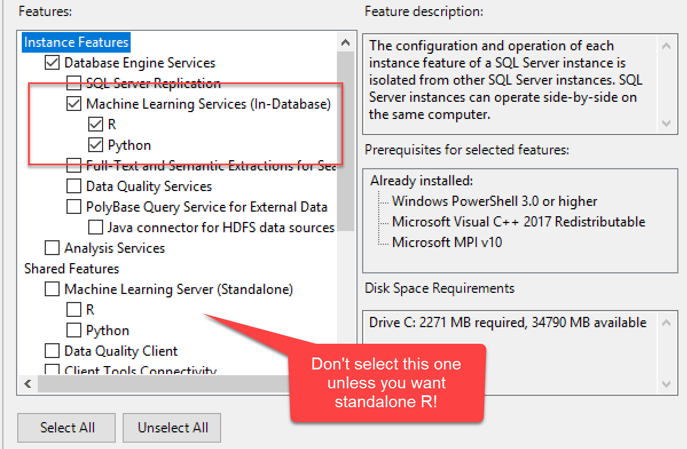

Developing a Solution
with SQL Server Machine Learning Services
Kevin Feasel (@feaselkl)http://CSmore.info/on/mlservicesdev
Who Am I? What Am I Doing Here?


What is ML Services?
SQL Server Machine Learning Services (ML Services) was originally released as SQL Server R Services with SQL Server 2016.
Since then, Microsoft added support for Python in SQL Server 2017 and renamed the product accordingly.
With SQL Server 2019, Microsoft has added Java support as well and has opened the door to other languages too.
Motivation
My goals in this talk:
- Introduce you to SQL Server Machine Learning Services.
- Discuss when ML Services might be a fit.
- Install and configure ML Services.
- Cover external script execution.
- Build a basic project and deploy custom code.
Agenda
- An Overview
- Installing ML Services
- Installing Packages
- External Script Execution
- Building a Project
- Deploying Custom Code
How it Works: R
Source
How it Works: Python
Source
The Upshot
Machine Learning Services brings ML code to the data, reducing data movement and extending functionality inside SQL Server.
We can use Resource Governor to limit CPU and memory utilization. See http://CSmore.info/on/mlservices for more information on this.
What Works Well
These kinds of scenarios work really well with SQL Server ML Services:
- Your input data is already in SQL Server.
- You have longer-running processes (batch training or scoring).
- You can use native scoring with the
PREDICToperator. - You want to interact with R using .NET code.
- You do not need real-time interactivity.
What Doesn't Work
Avoid these scenarios:
- You need singleton, near real-time predictions AND cannot use native scoring.
- None of your core data is inside SQL Server.
- Your SQL Server instance is already at near 100% CPU.
A Quick Note on Azure SQL Edge
Microsoft's Azure SQL Edge is a version of SQL Server intended for IoT scenarios. It includes support for ONNX, the Open Neural Network Exchange. This lets you perform native scoring of neural networks, but SQL Server 2019 does not currently support native prediction via ONNX.
Agenda
- An Overview
- Installing ML Services
- Installing Packages
- External Script Execution
- Building a Project
- Deploying Custom Code
Start a New Installation

Select ML Services
Enable External Scripts

Restart the Launchpad
Once you have enabled external scripts, be sure to restart the Launchpad service. To be safe, you might want to restart the SQL Server service as well.
Agenda
- An Overview
- Installing ML Services
- Installing Packages
- External Script Execution
- Building a Project
- Deploying Custom Code
Package Management
There are several techniques for installing packages in R and Python, but we will cover the three best approaches.
sqlmlutils
The sqlmlutils package allows you to install R or Python code remotely. This is the best way to install packages for SQL Server 2019 (R or Python) or 2017 (R only).
R / Python Console
If you have administrative access to the machine running SQL Server, you can open up the R console and run install.packages() in the console. Similarly, you can run pip install from the command line for Python.
By default, the R console is installed in the MSSQL{##}.{MSSQLSERVER}\R_SERVICES\bin folder, and pip.exe is installed in the MSSQL{##}.{MSSQLSERVER}\PYTHON_SERVICES\Scripts\ folder.
Create External Library
The CREATE EXTERNAL LIBRARY requires GRANT ALTER ANY EXTERNAL LIBRARY and allows you to install a package from a zip file.
Use This When:
- sqlmlutils: start with this for 2019, or for R packages in 2017.
- Console: "complex" packages (e.g., Keras in R) or cases when sqlmlutils fails to load a package from a repository.
CREATE EXTERNAL LIBRARY: cases when sqlmlutils fails to load a custom package.
Demo Time
Agenda
- An Overview
- Installing ML Services
- Installing Packages
- External Script Execution
- Building a Project
- Deploying Custom Code
External Script Execution
SQL Server has a built-in stored procedure to run R and Python code: sp_execute_external_script. It functions similarly to sp_executesql, which we use to run dynamic SQL.
sqlmlutils
The sqlmlutils package allows you to install R or Python code remotely. This is the best way to install packages for SQL Server 2019 (R or Python) or 2017 (R only).
Agenda
- An Overview
- Installing ML Services
- Installing Packages
- External Script Execution
- Building a Project
- Deploying Custom Code
Reviewing the Problem
Our organization unraveled a case of expense report fraud among several employees.
Employees were allowed to submit expense reports of up to $40 without a receipt, but needed to include a receipt for everything above. Several employees began submitting fraudulent claims under that amount.
Management would like to know how much we believe employees took above and beyond the expected amounts.
Demo Time

Putting ML to the Test
We now want to apply machine learning techniques to the problem, so we will write R and Python code to build models which will help us generate expected amounts.
Building an R Project
With RStudio and Rtools installed, go to File -> New Project -> New Directory -> R Package.

After adding in the code, we will build the package.

Building a Python Project
File -> New Project


Demo Time
Agenda
- An Overview
- Installing ML Services
- Installing Packages
- External Script Execution
- Building a Project
- Deploying Custom Code
Deploying Our Code
Just as with packages from repositories, we can use sqlmlutils to deploy our custom code.
This is also straightforward.
Demo Time
Wrapping Up
SQL Server Machine Learning Services offers the ability to operationalize R or Python effectively and can serve as a nice way to bring machine learning models to production.
Wrapping Up
To learn more, go here:
https://CSmore.info/on/backups
And for help, contact me:
feasel@catallaxyservices.com | @feaselkl
Catallaxy Services consulting:
https://CSmore.info/on/contact